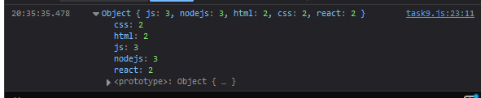

Завдання №5.9
HTML-код (task9.html)
<!DOCTYPE html> <html lang="en"> <head> <meta charset="UTF-8"> <meta name="viewport" content="width=device-width, initial-scale=1.0"> <title>= Task 9 =</title> <link rel="stylesheet" href="../style1.css"> </head> <body> <header></header> <main> <div class="button-container"> <h1>= Завдання №9 =</h1> <input type="button" class="button" onclick="window.location.href='../index.html'" value="На початкову сторінку"> <!-- Викликаємо відповідні JS-сценарії при натисканні кнопок --> <input type="button" class="button" onclick="callFunction1()" value="Виклик = 1 ="> </div> </main> <footer></footer> <script src="../tasks_js/task9.js"></script> </body> </html>
JS-код (task9.js)
// Масив об'єктів, де кожен об'єкт відображає твіт із унікальним id, кількістю лайків та тегами const tweets = [ { id: "000", likes: 5, tags: ["js", "nodejs"] }, { id: "001", likes: 2, tags: ["html", "css"] }, { id: "002", likes: 17, tags: ["html", "js", "nodejs"] }, { id: "003", likes: 8, tags: ["css", "react"] }, { id: "004", likes: 0, tags: ["js", "nodejs", "react"] }, ]; // Функція countTags обчислює кількість використань кожного тегу у всіх твітах const countTags = (tweets) => { return tweets.reduce((acc, tweet) => { // використовуємо reduce для підсумовування тегів у вигляді об'єкта tweet.tags.forEach(tag => { // для кожного твіта ітеруємося по його тегах acc[tag] = (acc[tag] || 0) + 1; // якщо тег вже є у об'єкті acc, збільшуємо його значення на 1, інакше ініціалізуємо значення 1 }); return acc; }, {}); }; // Функція для виклику countTags і виведення результату function callFunction1() { const сountTags = countTags(tweets); console.log(сountTags); };
Результат виконання
Коментар до JS-коду
Код виконує завдання коректно, забезпечуючи підрахунок кількості використань кожного тегу у масиві твітів. Для цього використовується метод reduce, який дозволяє обробляти всі елементи масиву та поступово формувати об'єкт, що містить підсумкову інформацію про теги. Кожен об'єкт у масиві tweets містить властивість tags, яка є масивом тегів, пов'язаних із конкретним твітом. Метод reduce приймає два аргументи: акумулятор (acc), який зберігає об'єкт із підрахованими тегами, та поточний елемент масиву (tweet). Для кожного твіта метод forEach перебирає масив тегів. У цьому процесі перевіряється, чи тег вже існує в акумуляторі acc. Якщо він є, його значення збільшується на 1, інакше створюється новий ключ із початковим значенням 1.